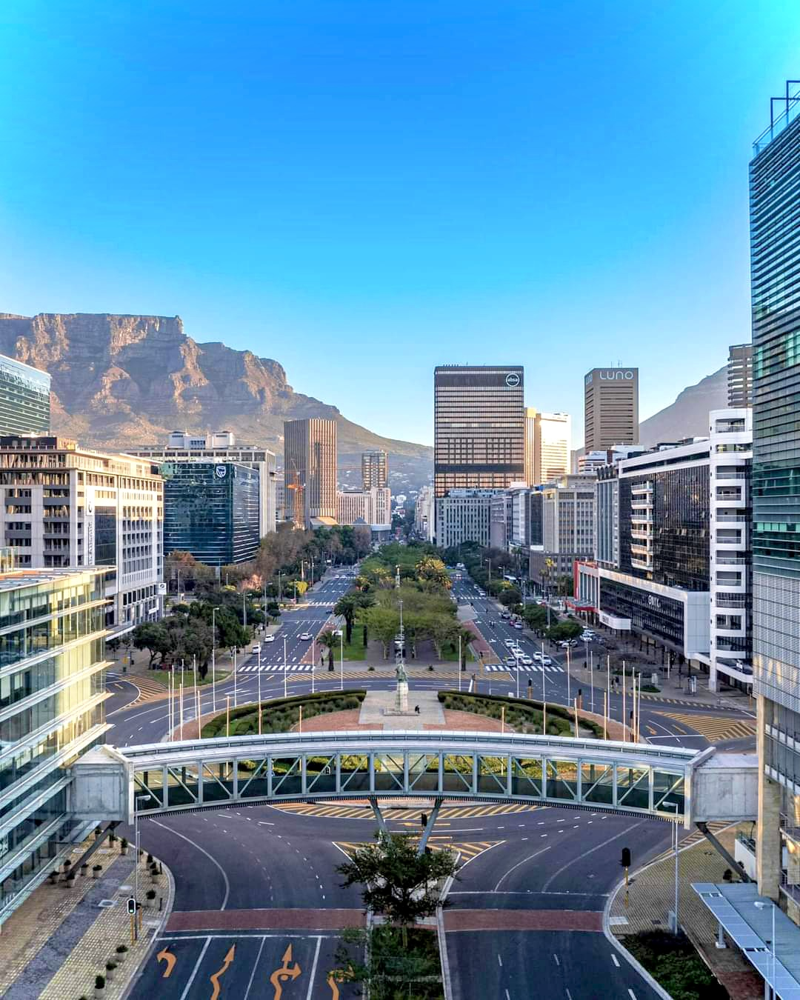

Why Capetown?
Capetown, the mother city
Cape Town is nicknamed the Mother City because it’s believed to be the first and oldest city in the country, and thus the “mother” of modern South Africa. In addition, Cape Town is also seen as the first European city established in South Africa, making it the “mother” of all European settlements in the country.
Cape Town is nicknamed the Mother City because it’s believed to be the first and oldest city in the country, and thus the “mother” of modern South Africa. In addition, Cape Town is also seen as the first European city established in South Africa, making it the “mother” of all European settlements in the country.